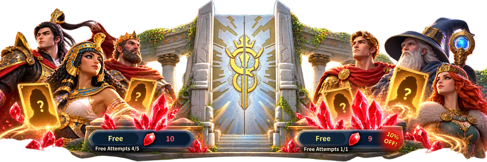

Use the five free Normal Summon attempts shown in the Hall of Immortals. Even fragments from lower-rarity Immortals can become useful Soul Crystals when you no longer need them.

Crimson Oak Academy · Lesson 6
Soul Crystals 101
“How do I get more crystals to buy Immortal fragments in the Market?” That's not a stupid question. For free-to-play players, the answer starts with collecting free summons, keeping useful fragments and converting the rest into the currency you actually need.
Know Your Currencies
Philosopher's Stones are used for Advanced Summons in the Hall of Immortals. Soul Crystals are earned by dismantling unwanted Immortal fragments in the Alchemy Lab and can be spent on Immortal fragments in the Market. They are not the same resource.
The Hall also has Normal Summons, which use their own summoning resource when the free attempts are exhausted. Don't confuse those red summoning crystals with the Soul Crystals you spend in the Market.
Claim Your Free Summons
Claim the free Advanced Summon when it becomes available. Advanced Summons can help you obtain stronger Immortals or fragments and progress toward the Hall's guaranteed-rarity reward.
These are separate free opportunities. Check the Hall's displayed counters and reset timers rather than assuming they refresh at the same moment.
Turn Fragments into Market Currency
1. SummonCollect Immortal fragments
2. ProtectKeep the fragments you need
3. DismantleConvert surplus fragments in Alchemy Lab
4. BuySpend Soul Crystals on priority fragments in Market
Open Alchemy Lab → Immortal Dismantle. Before converting anything, make sure the fragments for your main Immortals are protected. The lock and selection modes are easy to confuse, so follow our guide to protecting Immortal fragments if you're unsure.
Then dismantle only the surplus fragments you are comfortable giving up. The resulting Soul Crystals can help you buy the orange fragments you are actively collecting in the Market.
Get More Value from Free Rewards
Redeem codes can provide rewards such as Philosopher's Stones, Immortal fragments and other resources, depending on the code. Stones give you additional opportunities to summon; unwanted fragments from those summons may eventually become Soul Crystals.
Try the codes shared by the alliance, but remember that codes may expire or have eligibility limits. See How to Redeem Gift Codes for instructions and the alliance's CODE chat channel for newly shared codes.
Keep an eye on other free rewards from regular gameplay, including events, missions and activities that offer summoning resources or Immortal fragments. Check the actual reward before choosing an activity: not every crystal-looking item is a Soul Crystal.
Spend Like a F2P Strategist
Don't buy every orange fragment just because it appears in the Market. Choose the Immortals that matter to your main marches, then focus your Soul Crystals on developing them. Buying fragments for Immortals you won't use can slow down your progress.
Also remember that Tower of Knowledge development competes for Soul Crystals. Keep some in reserve when you're planning skill upgrades, and avoid dismantling fragments that could be valuable later.
Free summons → useful progress.
← Crimson Oak Academy
Claim your free attempts, use redeem codes, protect valuable fragments, dismantle only the excess and invest Soul Crystals where they strengthen your main marches most.